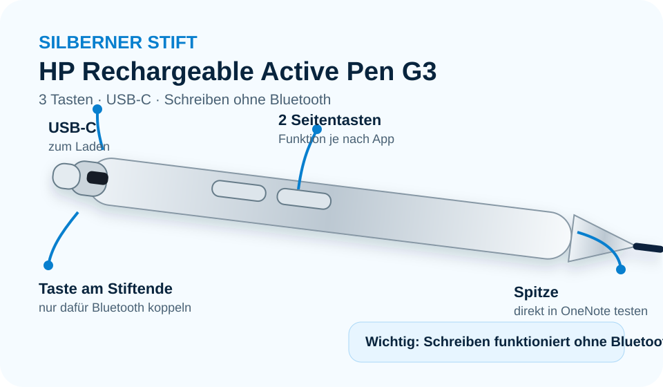
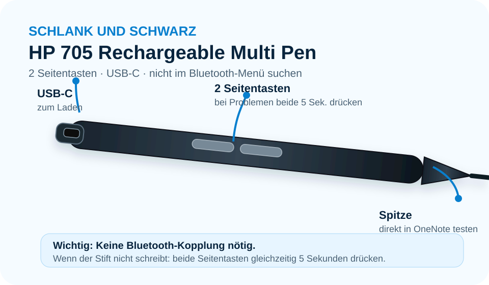

Stift laden
Verbinden Sie den Stift mit einem USB-C-Kabel. Laden Sie ihn mindestens 15 Minuten.
➜
Schnellstart · Woche 38
In der Klasse gibt es zwei HP-Stiftmodelle. Vergleichen Sie Ihren Stift mit den Bildern und öffnen Sie die passende Anleitung. Die Darstellung und die vier Schritte entsprechen den beiden Schnellstart-Grafiken.
HP Rechargeable Active Pen G3

Verbinden Sie den Stift mit einem USB-C-Kabel. Laden Sie ihn mindestens 15 Minuten.
Öffnen Sie OneNote und testen Sie den Stift direkt. Für das Schreiben ist keine Kopplung nötig.
Nur für die Taste am Stiftende: Gedrückt halten, bis das Licht blau blinkt. Dann in Windows «Bluetooth und Geräte» öffnen und «HP Active Pen» wählen.
Wählen Sie «Zeichnen» und einen Stift. Schreiben Sie Ihren Namen.
Die Seitentasten können je nach Gerät unterschiedlich eingestellt sein.
HP 705 Rechargeable Multi Pen

Verbinden Sie den Stift mit dem USB-C-Kabel. Laden Sie ihn mindestens 15 Minuten.
Gehen Sie nicht in die Bluetooth-Einstellungen. Der Stift erscheint dort normalerweise nicht.
Bluetooth
Andere Geräte · Es wurden keine Geräte gefunden.
Öffnen Sie OneNote. Wählen Sie «Zeichnen» und danach einen Stift.
Drücken Sie beide Seitentasten gleichzeitig 5 Sekunden. Danach nochmals testen.
Die Seitentasten können je nach Gerät unterschiedlich eingestellt sein.